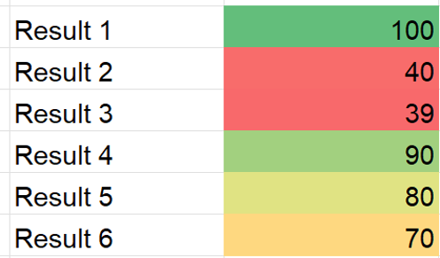
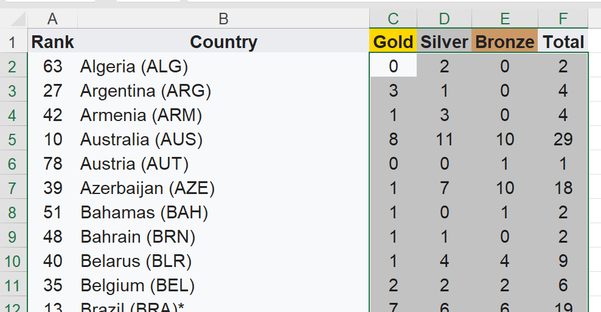
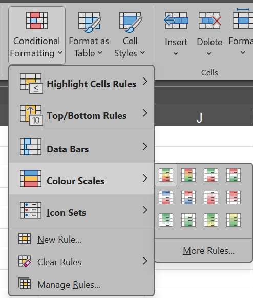
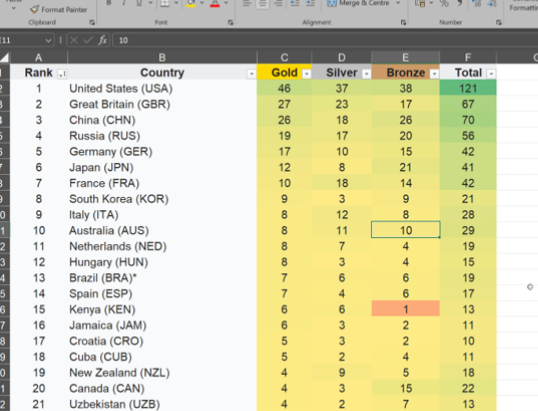

Task 3 - Conditional Formatting
-
At times we want the numerical data to visualised certain rank of numbers.
-
We can do so by using conditional formatting

Applying conditional formatting
-
In the same sheet, click and select all the numerical values from Gold, Silver, Bronze and Total. 
-
Under Home tab, click Conditional Formatting.
-
Then Colour Scales and select any of your preferred scales. 
-
Your result should look something like this. 